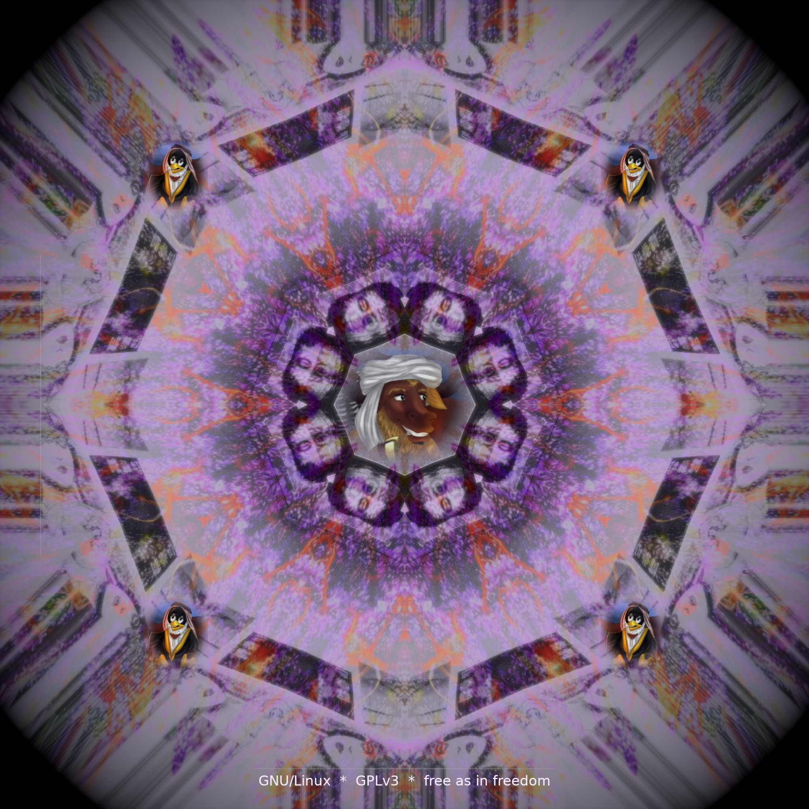

lot0x2c / notes
goschler-style fractals in gimp
2026-11-25 · gimp, art
This is how to turn a photo into a symmetrical, kaleidoscope-like picture in GIMP, in the style of Stefan Goschler's GNU art. My avatar is one of those. I don't know how the originals were made. This is a way to get close, with one photo for the shapes and another for the colours.

contents
the word "fractal" what the filter does by hand as a script what goes wrong the objection: "a website does this in one click" so
The word "fractal"
A fractal has structure at every scale: zoom in, and there's more of it. What this note makes isn't one. Zoom in and you find pixels. I use the word because the picture that started this is called a flower fractal, and because "goschler-style mirrored photos" wouldn't tell you what it looks like.
What the filter does
Nearly all the work is one filter, Filters > Distorts > Kaleidoscope. It picks a point in the photo, takes a thin wedge next to that point, and repeats the wedge around a circle, flipping every other copy so the edges meet. Most of the photo is never used. So the important decision is which part you keep, and these settings make it:
| setting | what it decides |
|---|---|
| Mirrors | how many times the pattern repeats around the circle |
| Center X, Center Y | the point in the photo the wedge starts from; 0 is the middle |
| Zoom | how much of the photo gets in: lower values show more, smaller |
| Wrap input | what happens past the photo's edge: on, it continues with mirrored copies; off, the border pixels get smeared outward |
The stripes in the corners of my picture are the border pixels. That's Wrap input turned off, and the edge of my room going on much longer than it does.
By hand
You need a photo for the structure, a photo for the colour, and one or two small pictures to hide in the pattern. I used a photo of me, a purple haze bud, and a drawing of the GNU and Tux at a campfire. I wrote this with GIMP 3.0.8.
- Boost the contrast. Duplicate the layer, set the copy to Overlay and merge down. Do it twice if the photo is hazy. A thin wedge of a flat photo is one flat colour, repeated.
- Run Kaleidoscope on the structure photo. Start with 8 mirrors and Zoom around 60, then move the center until something you recognise lands in the middle. Mine was at 0.25, 0.2.
- Run it on the colour photo, with a different number of mirrors. Crop out any white background first, because white has no colour to give.
- Blend. Desaturate the structure layer. Put the colour layer above it in LCh Color mode, which keeps the lightness of what's below and takes the colour from what's above. Add a copy of it in Overlay at about 45% for texture.
- Tint. Add a layer filled with purple, in Multiply at about 55%. This pulls everything towards one palette.
- Glow. Flatten the image, then use Filters > Artistic > Softglow with low brightness, and Filters > Light and Shadow > Vignette.
- Hide things. Open each small picture as a layer, crop it to the subject, scale it down, and give it a layer mask with a feathered ellipse so its edges fade. Put one in the centre and a few around the ring.
For the recursive version, run Kaleidoscope again on the finished image, before step 7.
As a script
The same steps up to the glow, in Python, so you can change a number and
render again. Save it as make.py and run:
gimp-console -i --no-data --quit --batch-interpreter=python-fu-eval \
-b "exec(open('make.py').read())"
Inside GIMP the filter is called gegl:mirrors, and the
settings have other names: n-segs is Mirrors, o-x and o-y are the center, input-scale is Zoom and warp is Wrap input. warp doesn't warp.
import gi
gi.require_version("Gimp", "3.0"); gi.require_version("Gegl", "0.4")
from gi.repository import Gimp, Gio, Gegl
RUN = Gimp.RunMode.NONINTERACTIVE
MODE = Gimp.LayerMode
SIZE = 2000
def flt(layer, op, **props):
f = Gimp.DrawableFilter.new(layer, op, op)
config = f.get_config()
for k, v in props.items():
config.set_property(k.replace("_", "-"), v)
layer.merge_filter(f)
def add(img, layer, mode, opacity):
img.insert_layer(layer, None, 0)
layer.set_mode(mode); layer.set_opacity(opacity)
def kaleidoscope(path, crop, mirrors, zoom, cx, cy, boost):
img = Gimp.Image.new(SIZE, SIZE, Gimp.ImageBaseType.RGB)
l = Gimp.file_load_layer(RUN, img, Gio.File.new_for_path(path))
img.insert_layer(l, None, 0)
x, y, w, h = crop
l.resize(w, h, -x, -y); l.scale(SIZE, SIZE, False); l.set_offsets(0, 0)
l = img.flatten()
for _ in range(boost): # step 1
d = l.copy()
add(img, d, MODE.OVERLAY, 100.0)
l = img.merge_down(d, Gimp.MergeType.EXPAND_AS_NECESSARY)
flt(l, "gegl:mirrors", n_segs=mirrors, input_scale=zoom,
o_x=cx, o_y=cy, warp=False) # steps 2 and 3
return img, l
img, base = kaleidoscope("me.jpg", (1000, 312, 2400, 2400), 8, 60.0, 0.25, 0.2, 2)
base.desaturate(Gimp.DesaturateMode.LUMINANCE)
_, bud = kaleidoscope("bud.jpg", (230, 120, 330, 560), 6, 55.0, 0.0, 0.0, 1)
add(img, Gimp.Layer.new_from_drawable(bud, img), MODE.LCH_COLOR, 90.0)
add(img, Gimp.Layer.new_from_drawable(bud, img), MODE.OVERLAY, 45.0)
tint = Gimp.Layer.new(img, "tint", SIZE, SIZE, Gimp.ImageType.RGB_IMAGE, 100, MODE.NORMAL)
add(img, tint, MODE.MULTIPLY, 55.0)
Gimp.context_set_foreground(Gegl.Color.new("#7a46b8"))
tint.edit_fill(Gimp.FillType.FOREGROUND)
out = img.flatten()
flt(out, "gegl:softglow", glow_radius=10.0, brightness=0.2, sharpness=0.7)
flt(out, "gegl:vignette", shape="circle", radius=1.25, softness=0.8, gamma=1.6)
Gimp.file_save(RUN, img, Gio.File.new_for_path("out.jpg"), None)
The two lists of four numbers are crops, as x, y, width and height in the original photo. They fit my photos. They won't fit yours.
What goes wrong
- You get thin lines on a dark background. Zoom is a percentage, so 1 means 1%. The photo has been shrunk to a dot in the middle, and the rest is its border, smeared.
- The middle is empty. The filter shows what's at the center you gave it. If that's a wall, you get a symmetrical wall.
- It's washed out. Boost the contrast before the Kaleidoscope step. A mirrored haze is still haze.
- GIMP never exits. In batch mode, pass
--quit. Otherwise it finishes the script and waits.
The objection: "a website does this in one click"
It does, and if you want one picture of a flower, use the website. But the photo goes to whoever runs it, and what they do with it is up to them. Here the photo stays on your machine. You can also change one number in the script and render it again.
So
Choose the wedge first, because everything else is colouring it in. Boost the contrast before mirroring, take the colour from a second photo, and keep the hidden things small.